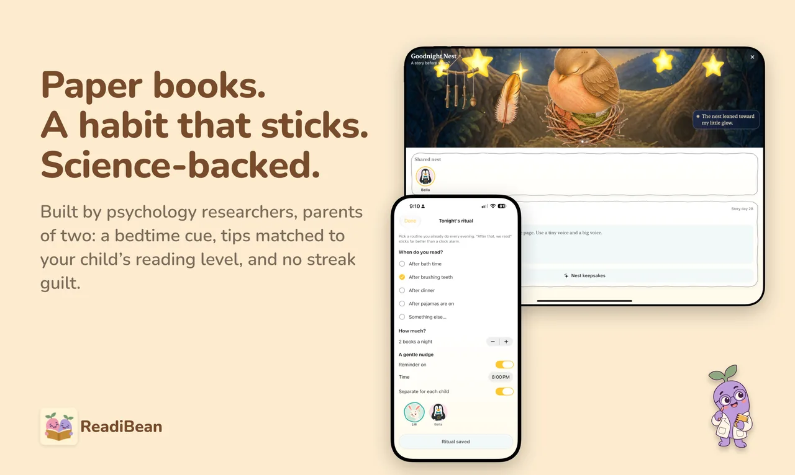
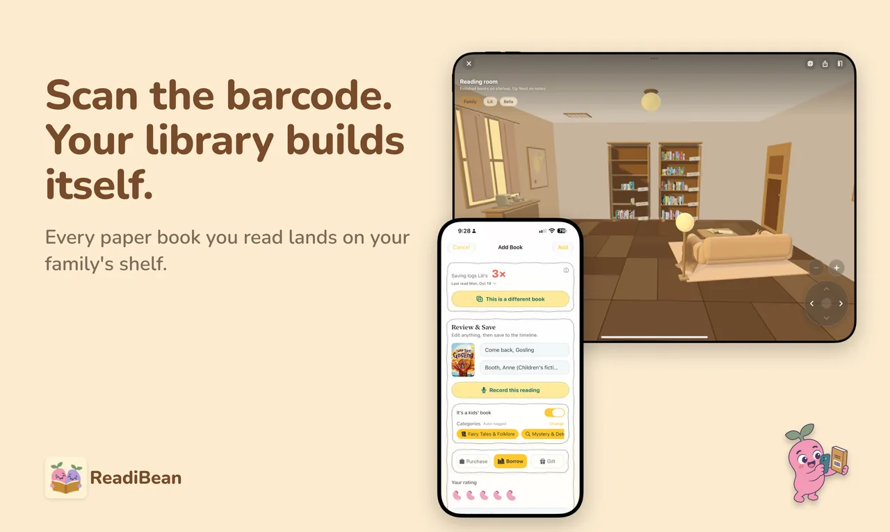
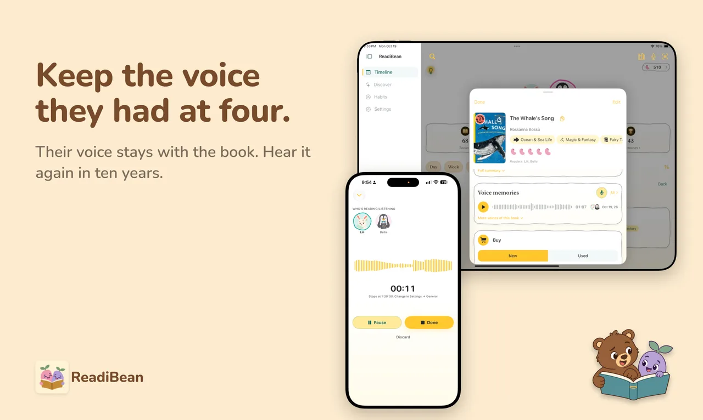
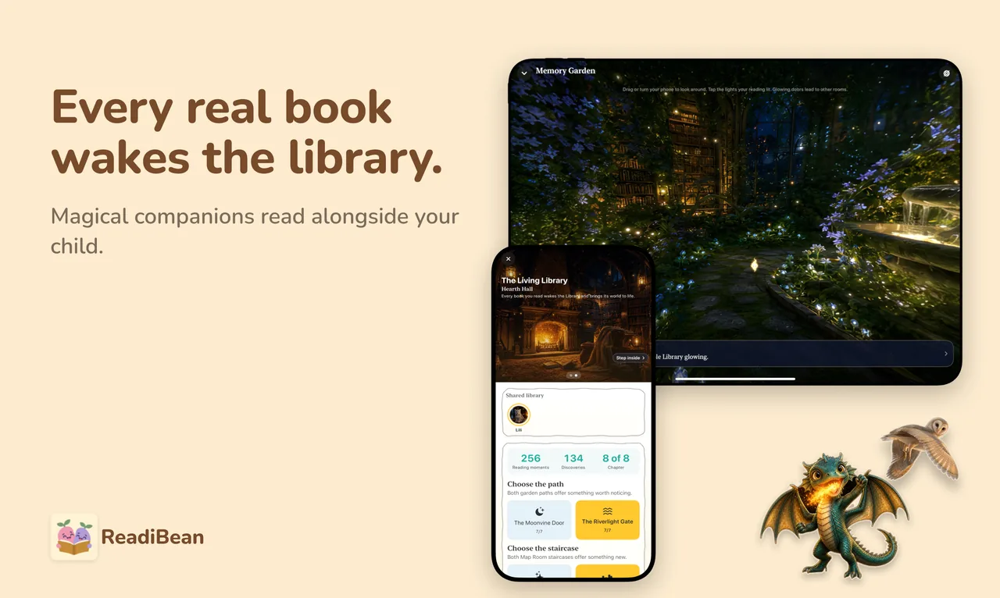
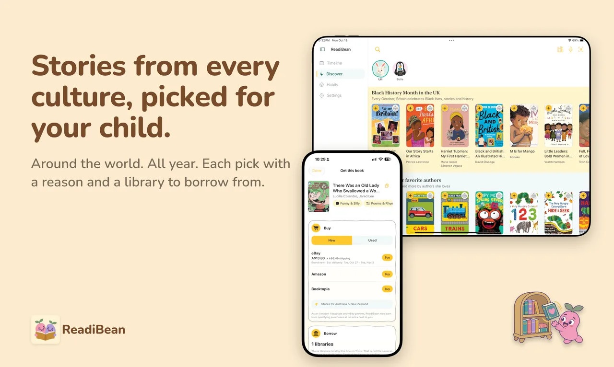
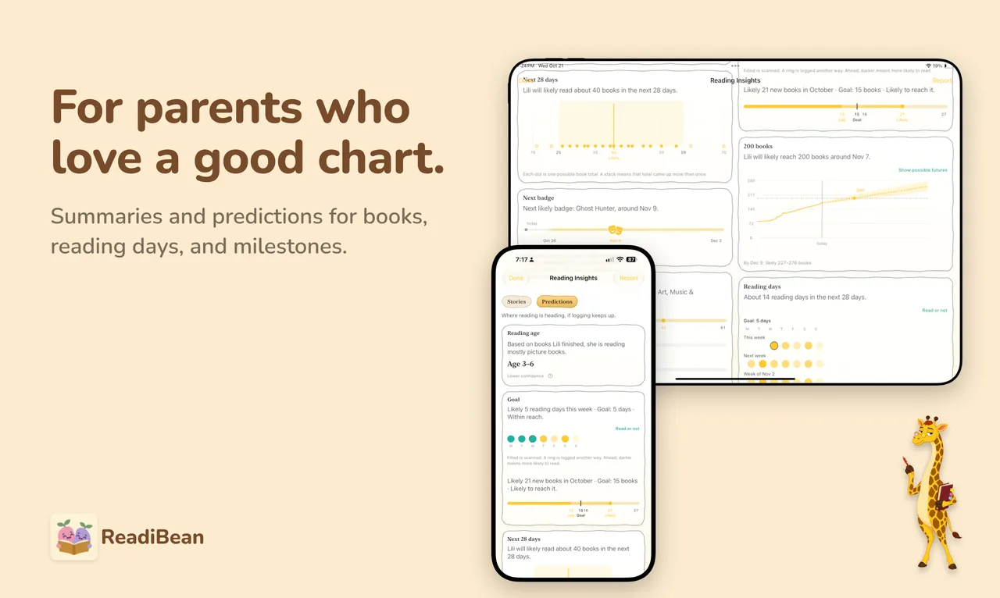

Scan, then close.
Point the camera at the barcode or ISBN. ReadiBean fills in the details, and tells you if you’ve read it before. Then the phone goes away, and the book opens.

The reading app that wants you to put it down.
Scan the book you’re reading together, then put the phone away. ReadiBean keeps every story, builds the habit, and finds the next favourite.
Free for iPhone and iPad · iOS 17.6 or later · For children from birth to twelve · US, UK, Canada, Australia and New Zealand
Every night, a small voice asks for one more. ReadiBean is for those nights. Thirty seconds to log the story, then the phone goes face down and the book does the rest.






How it works
Everything in ReadiBean starts with a real book in your hands.
Point the camera at the barcode or ISBN. ReadiBean fills in the details, and tells you if you’ve read it before. Then the phone goes away, and the book opens.
One timeline of the paper books you read together. Pinch from a single night out to a whole childhood. Record a bedtime reading and keep it with the book, so years from now they can still hear it.
Tonight’s ritual with research-informed tips, gentle reminders, streaks, goals and badges. After a few weeks, predictions show where reading is heading, as honest ranges. No guilt, no nagging.
Goodnight Nest, a cosy bedtime ritual for ages one to four. The Living Library, a story world of rooms and mysteries, with a companion of their choosing. Real reading moves them; nothing else does.
Picks shaped around this child’s tastes and reading level, a new topic every day, award winners, rhymes and songs, and festivals from around the world. See new and used copies, or check a nearby library.
Every finished book takes its place on the shelves of your Reading Room, and the next reads wait on notes. Open the Library, the Playroom and the Conservatory with beans, as a pack, or with Pro.
Every scanned book plants beans. Spend them to open companions and rooms. Pro families also earn golden beans toward gift cards.
With Pro, up to five people share one live library. Lock Screen and Control Center widgets keep tonight one tap away.
The phone’s job is thirty seconds.
The book gets the rest of the night.
Plans
ReadiBean Basic is free and complete on its own. Pro adds an AI librarian guided by each child’s real reading, and every paid pack, for the whole family.
Free
Monthly or yearly · cancel any time
Pro is an auto-renewing subscription managed through your Apple Account. Prices are shown in the app in your App Store’s currency. Cancel any time in Subscriptions.
Support
support@readibean.app
Thank you for your feedback!
Yes. ReadiBean is a journal for real, physical books. Scan the barcode or ISBN, and the screen’s job is done. The app wants you to put it down.
Children from birth to twelve: board books on a lap through the chapter books they read alone. The app is for the grown-up; the child only ever needs the book.
We made it paper-only on purpose. In the early years, screen time of any kind is linked to poorer outcomes. More screen use at age one predicts delays in communication and problem-solving at two and four (Takahashi et al., JAMA Pediatrics, 2023), and in preschoolers heavier screen use is associated with lower integrity in the brain’s language and literacy pathways (Hutton et al., JAMA Pediatrics, 2019). Swapping the paper book for an e-book does not fix it: toddlers and parents talk less and share less over tablets than over print (Munzer et al., JAMA Pediatrics, 2019), and across dozens of studies children understand stories better on paper than on screen (Furenes, Kucirkova & Bus, Review of Educational Research, 2021). The thing that helps is the paper book, read together. ReadiBean exists to make that the easy and rewarding choice.
Yes. ReadiBean runs on iPhone and iPad with iOS 17.6 or later, and your library syncs between them when you’re signed in.
An Android version is in development. We strive to push it live as soon as we can.
A parent or caregiver. Children get profiles, not their own logins. You can sign in with Apple or Google, or continue as a guest and keep everything on this device. Create an account any time to sync and share.
Up to five with Pro. Everyone sees the same shelf, the same timeline and the same milestones, kept in sync in real time. Invite them from Account in Settings.
Two reading worlds on the Habits tab. Goodnight Nest is a cosy bedtime ritual for little listeners, best for ages one to four. The Living Library is a story world of rooms and mysteries, best for four to eight, with a companion your child chooses; every real reading moment lights it up. Each child explores one world, and you can change it any time in Settings.
A reading room that grows with you. Each book you finish appears on its shelves, and the books you plan to read next wait on notes. Everyone in your household sees the same room. More rooms, the Library, the Playroom and the Conservatory, open as packs.
Beans grow when you scan a paper book you’ve read together: a reading night, a new book, and a bonus for a five-night week. Only scanned books count; typing a title in doesn’t. Spend beans to open companions and rooms. A pack you open is yours to keep.
Pro families also earn golden beans, which count toward gift cards as a thank-you for reading together. The first card is $5, at 80 reading days, and the Beans page shows everything each card needs. Cards follow one child, the one with the most reading days, and a card earned on Pro needs a paid subscription when you claim it. The Beans page in the app shows your balance, what counts and the rules. Apple and Amazon are not sponsors.
Every AI feature and every paid pack, for the whole family: week, month and year reports written around each child’s reading, a personal Discover with a reason for each pick, insights with a next step, a tailored pick for tonight and richer book-talk prompts, every paid companion and room while you’re subscribed, golden beans toward gift cards, and one live library shared by up to five people. Pro is a monthly or yearly subscription managed through your Apple Account; cancel any time in Subscriptions. Everything else in ReadiBean is free.
Yes. Open them with beans, or buy them one at a time. A pack you open or buy is yours to keep.
After four weeks and twelve books, ReadiBean shows where reading is likely heading: books this week, reading days, the next badge, when Up Next will be finished. Each one is a range, not a promise, and it only gets better the more you log.
Yes. Recordings are kept with your household’s library and are only shared with the people you’ve invited. Guests keep recordings on their device only.
From what your child has already loved and their reading level, a curated catalogue of children’s books, award lists, a daily topic and festivals from around the world, and, for Pro families, the librarian’s picks written around your library. “Get this book” shows new and used copies to buy, and nearby libraries where you can check. Finding a library uses your location once, and only if you allow it.
Settings → Privacy & Data. Export Everything gives you a spreadsheet or PDF of your whole library. Note that deleting the app does not delete a signed-in cloud account. Use Delete everything in the app, or email us and we’ll take care of it.
Tonight’s story is waiting.
Get ReadiBeanMade in Australia by two parents who research child development.